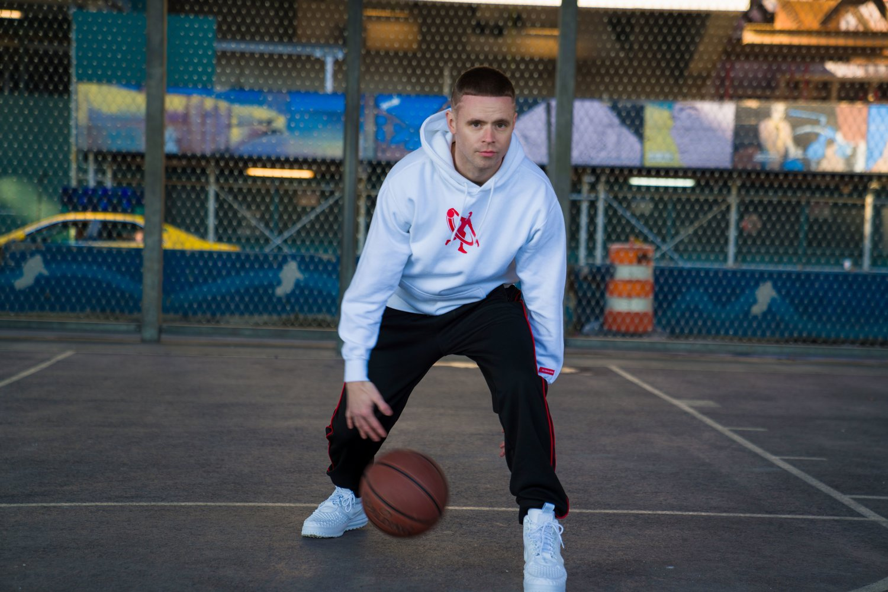
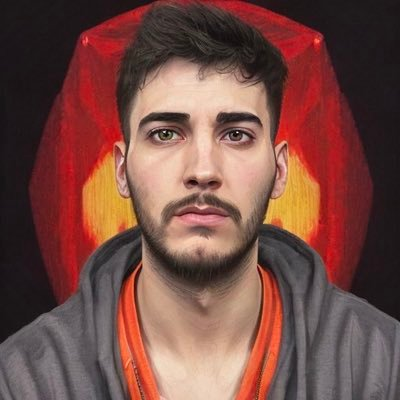
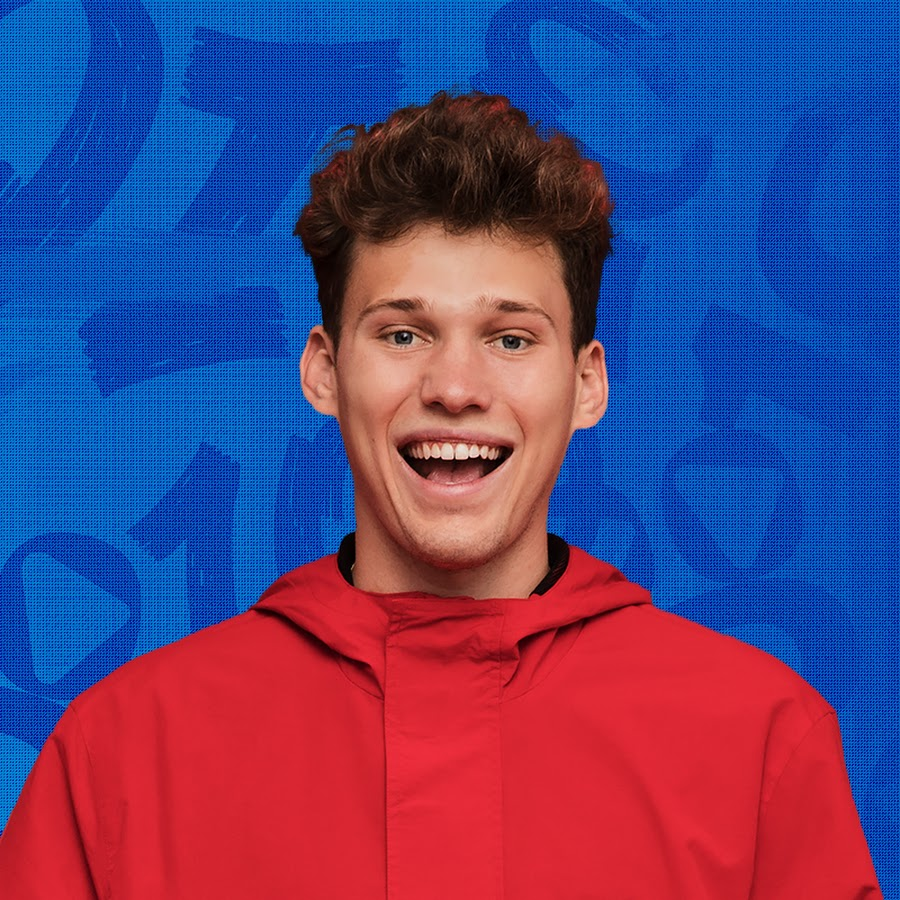
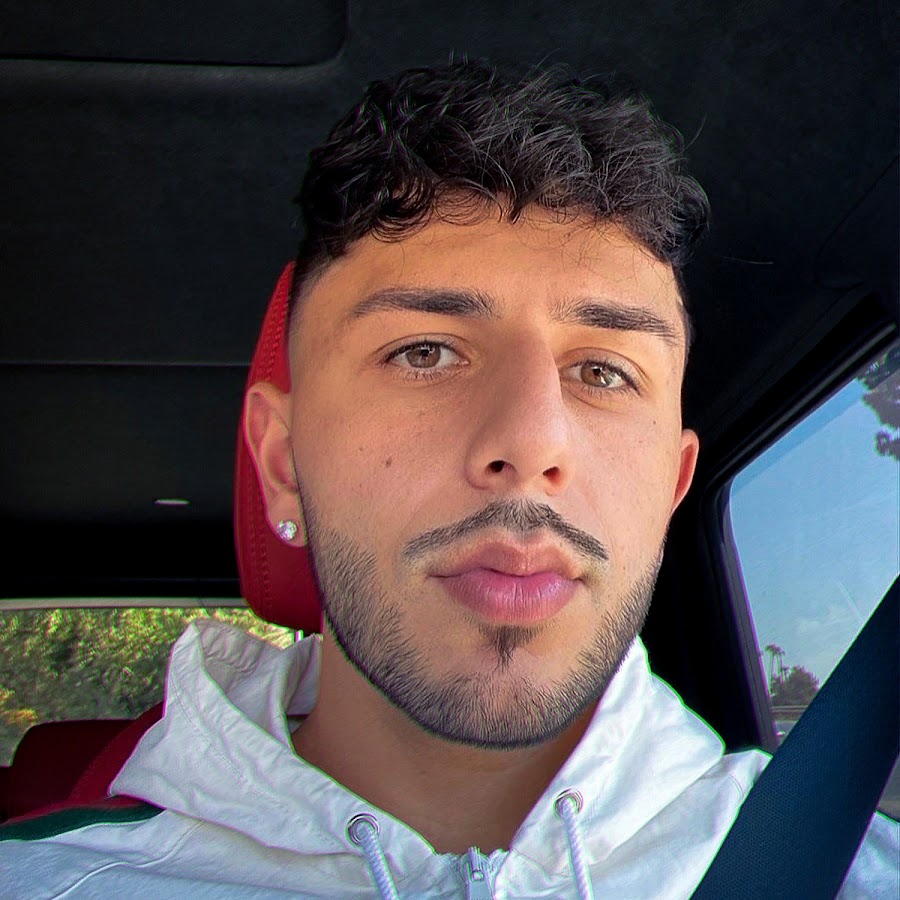

Top YouTubers om basketbal te leren spelen
| Links naar kanaal | Bibliografie | |
|---|---|---|
| Professor Live  | Grayson "The Professor" Boucher, geboren en getogen in Keizer, Oregon, werd op 18-jarige leeftijd professioneel met de And 1 Mixtape Tour. Zijn YouTube-kanaal, ProfessorLive, verwierf bekendheid door indrukwekkende balbehandeling en bereikte meer dan 100 miljoen views na een virale video in 2013. Met 11 miljoen volgers op sociale media is de Spiderman Basketball-webserie van The Professor de meest bekeken op YouTube. | |
Nick briz |
Deze YouTuber en Instagram-ster staat bekend om video's waarin hij basketbalt tegen vreemden op gemeenschappelijke pleintjes. Met meer dan 750.000 abonnees en 80 miljoen views op zijn kanaal, begon hij zijn YouTube-reis in juli 2018. Zijn eerste video, gepost in januari 2020, toont hem op een basketbalveld in Pine Hills, FL. Afgestudeerd aan Hagerty High School, deelt hij ook basketbalclips op Instagram met meer dan 490.000 volgers. Op TikTok heeft zijn account _nickbriz meer dan 750.000 volgers verzameld | |
Adri Carmona  |
Adriana Carmona Gutiérrez (Puerto La Cruz, 3 december 1973) is een Venezolaanse sportvrouw die heeft deelgenomen aan het taekwondo. Ze nam deel aan drie Olympische Zomerspelen tussen 2000 en 2008, waarbij ze een bronzen medaille won tijdens de editie van Athene 2004 in de categorie +67 kg.1 Ze behaalde drie medailles op de Pan-Amerikaanse Spelen tussen 1995 en 2003.2 Ze won een medaille op het Wereldkampioenschap Taekwondo in 1993, en vier medailles op het Pan-Amerikaans kampioenschap Taekwondo tussen 1990 en 1998.2 | |
AirCriss  |
Cristian Lima, bekend op internet als Aircriss, is een gepassioneerde jongeman uit Malaga met een liefde voor videogames en basketbal. Hij heeft met succes deze twee passies gecombineerd om op te vallen op YouTube, waar hij duizenden volgers op sociale media heeft vergaard en meer dan 157.000 abonnees op zijn kanaal heeft. Zijn kanaal, Aircriss, richt zich voornamelijk op video's die verband houden met het spel NBA 2K. Met zijn enthousiasme voor zowel videogames als basketbal heeft Cristian een toegewijde gemeenschap opgebouwd die zijn content met interesse volgt. | |
ARI GELI  |
Ari Geli, opkomend basketbaltalent uit Barcelona, debuteerde in 2022 bij de Pune Panthers in India. Ze is niet alleen een favoriet op het veld maar ook een Puma-ambassadeur en invloedrijke sociale media-persoonlijkheid. In 2023 richtte ze Panthers3x3 op, waar ze als CEO, coach en speler actief is. Ari's indrukwekkende succes strekt zich uit van basketbalvelden tot ondernemerschap en sociale media. | |
| SergiiRam  | SergiiRam is een Spaanse YouTuber en content creator bekend om zijn entertainende NBA 2K-video's. Met boeiende gameplay, gepassioneerd commentaar en frisse perspectieven heeft hij een grote aanhang opgebouwd. Zijn kanaal is geëvolueerd naar content over andere basketbalonderwerpen en samenwerkingen. Ook streamt hij live gameplay. Zijn passie voor basketbal en het creëren van boeiende content hebben hem tot een succesvolle en erkende figuur in de Spaanse NBA 2K-gemeenschap gemaakt. | |
| TRESCO | TrescoBall, oftewel Oriol Tres, is een Spaanse YouTuber en voormalig basketbalspeler uit Sabadell. Na zijn tijd bij de Universiteit van Pennsylvania keerde hij terug naar Spanje, speelde voor Real Madrid's tweede team, maar brak niet door. In 2020 stopte hij met basketbal en richtte zich op zijn YouTube-kanaal, dat nu meer dan 1,5 miljoen abonnees heeft. TrescoBall is een van de meest populaire basketbal-YouTubers in Spanje en een inspiratie voor jongeren die dromen van succes in sport en media. | |
| Jesser  | Jesse Riedel, widely known as Jesser, is a 23-year-old American gaming YouTuber renowned for his content featuring basketball, NBA 2K, and various challenges. Formerly recognized as JesserTheLazer, he is a key member of the 2HYPE and 100 Thieves groups. Collaborating with fellow 2HYPE members, Jesse releases weekly challenge videos on his YouTube channel. Additionally, he is the founder of Trucreator cards. With 4.25 million subscribers on his primary channel, Jesse has received both a silver and golden play button from YouTube, acknowledging his significant milestones in subscribers and viewership. | |
Tristan Jass  |
Tristan Jass, bekend om zijn basketbaltrucs op YouTube met 5 miljoen abonnees, is een Amerikaanse speler, digitale influencer en ondernemer. Na een veelbelovende start op de middelbare school en twee jaar universiteitsbasketbal besloot hij zijn studie te verlaten en zich te richten op YouTube. Zijn trucvideo's zijn populair en hij heeft samengewerkt met NBA-sterren. Als succesvol ondernemer heeft hij zijn eigen kledinglijn en is hij merkambassadeur voor Electrolit. | |
| Brawadis | Brandon Awadis, bekend als een opkomende NBA-analist en toegewijd fan van de Phoenix Suns, beheert het Phoenix Suns-team voor VAVEL. Met meer dan 6 miljoen abonnees op zijn Brawadis YouTube-kanaal, begon hij in 2015 regelmatig video's te maken. Hij studeerde journalistiek met een focus op mediastudies. Afkomstig uit San Diego, Californië, heeft Brandon relaties gehad, waaronder met Jackie Figueroa en later Jasmine, die hij in maart 2023 aan zijn ouders voorstelde. Hij is ook de broer van FaZe Rug en heeft hem in diverse video's op zijn kanaal laten verschijnen. |